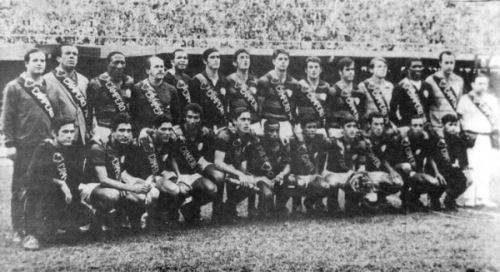

Mas você conhece a história desse time do bairro Água Verde?
Linha do Tempo
Do bairro às glórias
1924
O Surgimento
Fusão
O clube de futebol Athletico Paranaense nasceu da fusão do International Foot-Ball Club e do América Football Club. Do Internacional(alvinegro) herdou a cor preta
e do América(alvirubro) a cor vermelha, surgindo assim a camisa rubro-negra que só se veste por amor.
Primeiro título
1925
Começo promissor
Logo em seu primeiro campeonato paranaense o Athletico foi campeão sobre o Savóia, empatando em 1 a 1 na primeira partida, e vencendo
por 3 a 1 na volta. O time titular campeão era composto pelos jogadores: Tapyr; Harold e Marrecão; Lourival, Falcine e Nano; Ary, Marreco, Urbino, Maneco e Motta.
1936
Penta campeão
Anos 30
Durante os anos 30, o Athletico foi campeão dos campeonatos paranaenses de 1930, 1934 e 1936 (invicto!) se tornando penta campeão (também foi campeão em 1929) com apenas 11 anos de
existência! O elenco campeão invicto de 1936 era formado por: Caju; Zanetti e Osório; Korman, Bibe e Bortolotti; Raul (Naná), Zinder, Bento, Cecatto e Cecattinho.
O "Furacão"
1949
49 gols em 11 jogos
Um dos títulos mais relavantes na história do Athletico, o elenco com um ataque formado por craques como Jackson e Cireno,
devido ao desempenho avassalador o Athletico recebeu a alcunha de "Furacão" devido a manchete "O Furacão Levou o Tigre de Roldão" publicado
no jornal Desportos Ilustrados, foram 11 vitórias e uma derrota, com 49 gols marcados e 19 sofridos,
o artilheiro foi Neno que balançou a rede 18 vezes.
O elenco era formado por: Laio; Délcio e Waldomiro; Waldir, Wilson e Sanguinetti; Viana, Rui, Neno, Jackson e Cireno. Técnico: Motorzinho.
1958
Jejum
9 anos de espera
O ano de 1949 é um ano marcante na história do Club, mas com o seu fim começou um período de um grande jejum, o Athletico só voltou a ser campeão
novamente em 1958, foram 9 anos sem título e o único na década de 60, o elenco campeão era formado por: William; Damião e Araújo; Belfare, Tocafundo e Sano; Agostinho, Odilon, Taíco, Gaivota e Péricles.
Vacas Magras
1970

12 anos na fila
Se na década de 50 houve um jejum de títulos, na década de 60 foi ainda pior, com dificuldades financeiras e passando por um reestruturação no time,
o Athletico chegou a ficar 12 anos sem ser campeão, voltando a conquistar o campeonato paranaense novamente apenas em 1970, em 1968 entretanto mesmo sem
título foi um ano importante pois nesse período os lendários Sicupira, Nilson Borges e Djalma Santos chegaram no clube. O elenco campeão de 1970 era formado por: Vanderlei; Djalma Santos, Zico, Alfredo e Júlio; Reinaldo e Toninho; Liminha (Gildo), Sicupira, Nelsinho (Zezé) e Nilson Borges. T: Alfredo Ramos.
1978
São Ziquita
"O Athletico é força porque é do povo"
1978 seria um ano para ser esquecido já que o Athletico enfrentou o mesmo destino do que os anos anteriores após 1970: fracasso. Porém,
uma partida entrou pra história athleticana após a atuação histórica e lendária de Ziquita que transformou uma goleada vergonhosa em empate
histórico tendo feito quatro gols em 12 minutos contra o Colorado e quase tendo feito o quinto, um jogador que jamais pode ser esquecido e que é
lembrado carinhosamente por alguns torcedores em momentos de dificuldade, afinal: chama o Ziquita que ele resolve.
O fim do sofrimento
1982
O casal 20
Novamente, após passar por dois grandes períodos sem títulos, o Athletico enfrentou outro grande jejum voltando a ser campeão somente em 1982 com grandes atuações
do "Casal 20", formado pela brilhante dupla de Washington e Assis, o elenco rubro-negro liderou o campeonato ao longo de três turnos
chegando a ficar 26 partidas sem sofrer derrotas, o ataque athleticano marcou 70 gols e o título foi coroado com uma goleada de 4 a 1
em cima do Colorado. O elenco campeão era formado por: Roberto Costa; Ariovaldo, Jair Gonçalves, Bianchi e Sérgio Moura; Jorge Luis (Detti), Lino e Nivaldo; Capitão, Washington e Assis (Ivair). Técnico: Geraldino.
1983
Bicampeão
Campanha histórica
O ano de 1983 ficou marcado pelo desempenho histórico no campeonato brasileiro, o Athletico terminou o campeonato na terceira colocação,
tendo sido eliminado na semifinal por nada menos que o Flamengo de Zico, mesmo após perder por 3 a 0 na ida no Maracanã,
o Athletico quase conseguiu reverter tendo feito 2 a 0 no jogo da volta que aconteceu no Couto Pereira
com um público de 67 mil torcedores (recorde de público do estadio rival até hoje). Além da atuação impressionante no brasileirão, o
rubro-negro foi bicampeão paranaense em cima do rival Coritiba após muito tempo mesmo com um time que teve saídas importantes como da dupla Washington e Assis.
O elenco bicampeão era formado por: Rafael, Détti, Celso, Augusto, Cândido; Jorge Luís, Cristóvão, Nivaldo; Ivair (Binga), Joel, Renato Sá. Técnico: Lori Paulo Sandri.
O Primeiro Título Nacional
1995
A Revolução
O Athletico ficou sem sua arena por 9 anos e só voltou a mandar os jogos dentro de casa em 1994 devido a Baixada ter passado por uma reconstrução.
Em 1995 o Athletico conseguiu seu primeiro título nacional vencendo o Central por 4 a 1 e assim terminando na primeira posição sendo campeão da
segunda divisão sobre seu maior rival: Coritiba. O ano de 1995 também foi marcado pelo início da revolução rubro-negra, tendo uma derrota em um Athletiba como
ponto de partida, Mario Celso Petraglia assumiu a direção do clube e o Athletico nunca mais foi o mesmo.
O elenco era formado por: Ricardo Pinto; Valdo, Jean, Luís Eduardo, Ronaldo; Alex, Leomar (Everaldo), João Antônio, Washington (Borçato); Oséas, Paulo Rink. Técnico: Pepe.
1999
Seletiva Libertadores
Eu sou o Lucas
Em 1999, o Athletico foi campeão da Seletiva Libertadores, um campeonato criado pela Conmebol para definir o terceiro representante brasileiro na Libertadores,
o time rubro-negro se consagrou campeão derrotando equipes como Coritiba (com direito a goleada), Internacional, São Paulo e Cruzeiro, com isso garantindo a
primeira participação do time paranaense na Libertadores na história. No mesmo ano também foi inaugurada a nova Arena da Baixada que foi demolida em 1997. Ainda no
ano de 1999 também ocorreu a icônica frase "Eu sou o Lucas" que foi dita pelo... Lucas como resposta a um menosprezo por parte do Flamengo.
O elenco campeão era formado por: Flávio; Alberto, Gustavo, Leonardo, Vanin; Fabiano (Marcos Vinícius), Axel, Adriano, Kelly; Lucas (Kleber), Sandoval (Kleberson). Técnico: Oswaldo Alvarez (Vadão).
A Estrela Dourada
2001
Campeão Brasileiro
O elenco athleticano que no primeiro semestre de 2001 já havia se consagrado campeão paranaense conseguiu um feito histórico que
pra sempre estará marcado no clube, o time conquistou a vaga para a fase de mata-mata com seis jogos de antecedência e chegou a ficar 12 jogos seguidos sem perder.
Na fase mata-mata o Furacão eliminou o São Paulo e Fluminense, com atuações brilhantes de Alex Mineiro, e se consagrou campeão brasileiro derrotando o São Caetano.
A festa athleticana tomou conta das ruas de Curitiba indo desde o aeroporto até a Arena.
O elenco campeão brasileiro era formado por: Flávio; Alessandro, Gustavo, Nem, Rogério Corrêa (Igor) e Fabiano; Cocito (Pires), Kleberson e Adriano; Kléber (Souza) e Alex Mineiro. Técnico: Geninho.
2005
Finalista Libertadores
Dois vices amargos
Em 2004, o Athletico foi vice-campeão brasileiro terminando atrás do Santos tendo jogos como a Batalha de Erechim onde uma partida que estava
3 a 0 para a equipe rubro-negra terminou em um 3 a 3 e que foram determinantes para a perda do bicampeonato brasileiro. No ano seguinte
o Furacão teria um vice ainda mais amargo, o Athletico foi finalista da Libertadores e perdeu para o São Paulo de Ceni numa final cercada
de polêmicas incluindo a impossibilidade da partida de ida ser jogada na Baixada (estádio no qual a equipe paulista sofria de um tabu onde
nunca haviam vendo o Athletico na Arena), a equipe rubro-negra foi obrigada a jogar no Beira-Rio
mesmo tendo realizado as alterações necessárias para a final ocorrer na Arena.
O elenco finalista era formado por: Diego; Jancarlos, Danilo, Durval, Marcão; Cocito, Alan Bahia, Fernandinho, Fabrício; Lima, Aloísio. Técnico: Antônio Lopes.
Copa do Mundo
2014
A Arena Mais Moderna da América Latina
A cidade de Curitiba foi uma das cidades-sede da Copa do Mundo e a Arena da Baixada foi o estádio escolhido, devido a isso novamente o Athletico ficou sem sua casa
durante as obras (2011-2014), e mesmo assim chegou na final da Copa do Brasil em 2013, perdendo na final para o Flamengo, nesse mesmo ano o Furacão também surpreendeu terminando
o brasileirão na terceira posição mesmo tendo recém voltado da segunda divisão. Em 2014 a nova Arena da Baixada foi inaugurada com uma capacidade de 42 mil pessoas,
posteriomente foram implantados o teto retrátil (único na América Latina) e o gramado sintético.
2018
Campeão Continental
Conmebol Sudamericana
Em 2018, além de ser campeão paranaense com a equipe de Aspirantes, o Furacão também voltou a uma final de uma competição internacional,
o time liderado por Tiago Nunes enfrentou a equipe colombiana Júnior Barranquila, após um empate em 1 a 1 na Colômbia no jogo de ida, tudo seria
resolvido na Baixada. E não poderia ser diferente, Pablo em um ano mágico abriu o placar no Caldeirão, porém o empate veio e com isso o jogo foi para
a prorrogação, o roteiro para a tragédia estava pronto: penâlti para o adversário, com o pouco tempo de jogo restante correr atrás no placar seria
praticamente impossível, com um público recorde de mais de 40 mil vaias insurdecedoras, o penâtil foi para fora como se a própria torcida tivesse defendido.
Nos penâltis o Athletico foi declarado campeão com o decisivo sendo batido pelo general Thiago Heleno.
O elenco campeão era formado por: Santos; Jonathan, Thiago Heleno, Léo Pereira e Renan Lodi; Bruno Guimarães, Lucho González (Wellington) e Raphael Veiga; Nikão (Marcinho), Pablo (Bergson) e Marcelo Cirino (Rony). Técnico: Tiago Nunes
Título Inédito
2019
Copa do Brasil
Em 2019, o elenco ainda comandado pelo vitorioso Tiago Nunes, conquistou outro título inédito: a Copa do Brasil, eliminando times como
o Flamengo de Jorge Jesus, Grêmio e sendo campeão em cima do Internacional estragando assim os planos de uma "Copa dos Gaúchos" como alguns canais
estavam apontando, a final foi completamente dominada pelo Furacão com direito a vitória tanto na ida quanto na volta, no Beira-Rio ocorreu um dos lances
que estão eternamente na história rubro-negro e que foi apelidada carinhosamente como Cirineta;
O elenco campeão era formado por: Santos; Khellven, Robson Bambu, Léo Pereira e Márcio Azevedo; Bruno Guimarães, Lucho González e Léo Cittadini; Nikão, Rony e Marco Ruben (Marcelo Cirino). Técnico: Tiago Nunes
2021
Bi-campeão Continental
Voleio do Nikão
Em 2021, o Furacão chegou novamente a uma final de Sudamericana e foi campeão em cima do Red Bull Bragantino, o jogo acabou em 1 a 0 e gol foi
marcado pelo Nikão que fez um lindo voleio pra trazer mais uma taça para Curitiba, nesse mesmo ano o Athletico foi novamente finalista da Copa do Brasil,
porém, dessa vez foi derrotado pelo Atlético Mineiro, a final ficou marcada pela festa rubro-negra com um estádio lotado mesmo após um 3 a 0 no jogo de ida;
O elenco campeão era formado por: Santos; Pedro Henrique, Marcinho, Nico Hernández; Marcinho, Erick; Léo Cittadini, Abner; Nikão, David Terans e Renato Kayzer. Técnico: Alberto Valentim.
A Obsessão Continua
2023
No Quase Outra Vez
Em 2022, o Athletico novamente chegou a uma final de Libertadores, com diversos jogos emocionantes e eliminando gigantes como Estudiantes de La Plata e Palmeiras,
o Furacão enfrentou o Flamengo na finalissíma, porém, ainda no primeiro tempo o zagueiro Pedro Henrique foi expulso e com um a menos o rubro-negro paranaense foi derrotado outra vez.
O elenco finalista era formado por: Bento; Abner, Thiago Heleno, Pedro Henrique e Khellven; Hugo Moura, Fernandinho e Alex Santana; Vitinho, Vitor Roque e Vitor Bueno. Técnico: Felipão